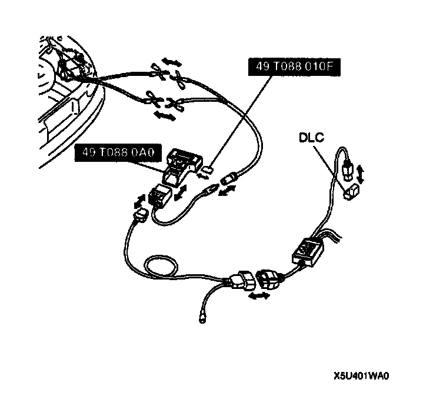
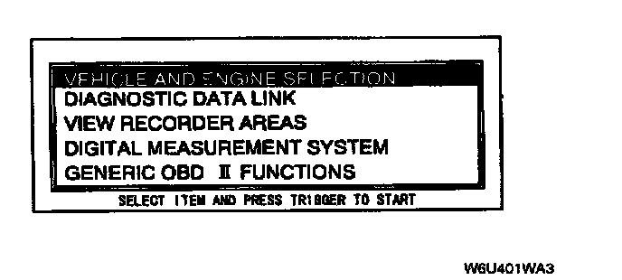
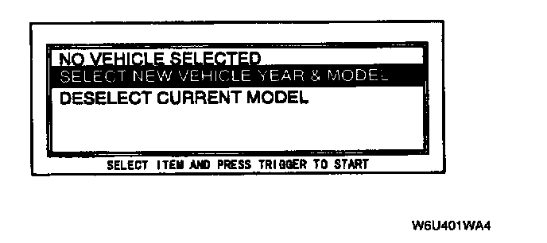
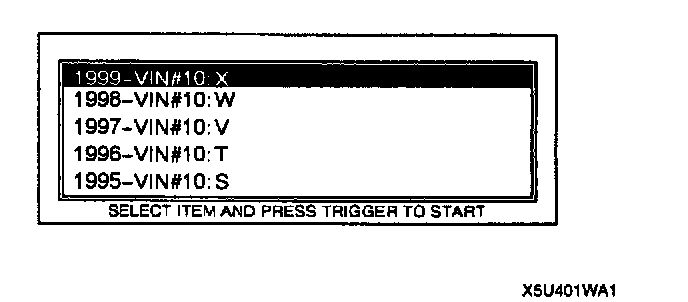
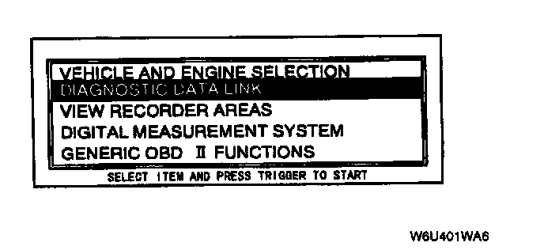
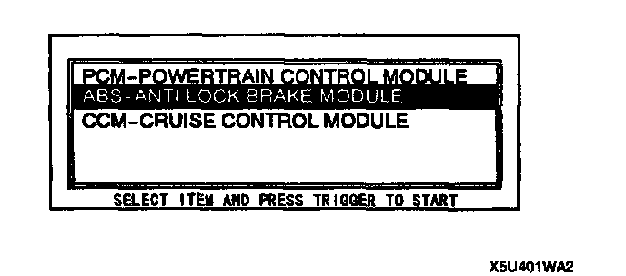
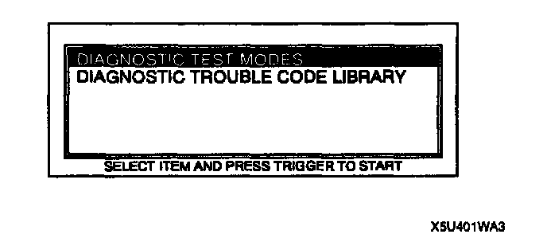

With New Generation Star (NGS) Tester
Reading DTCs ProcedureNote:
^ When reading Diagnostic Trouble Codes (DTCs) by using the New Generation Star (NGS), the ABS warning light also indicates DTCs by flashing.
^ In case the On-Board Diagnostic (OBD) test is performed in the following conditions or NGS tester isn't operated properly, NO CODES RECEIVED may be indicated even if the ABS control module sends any DTCs.
1. Open or short circuit in wiring harness connected with the terminals FBS or TBS of the data link connector.
2. Poor positive battery voltage.

1. Perform the necessary vehicle preparation and visual inspection. Hook-up the SST (NGS tester) to the vehicle.

2. Move the cursor to VEHICLE AND ENGINE SELECTION.

3. Move the cursor to SELECT NEW VEHICLE YEAR & MODEL. Press the trigger key to enter this selection.

4. Move the cursor to 1999 - VIN #10:X. Press the trigger key to enter this selection.
5. Move the cursor to appropriate model. Press the trigger key to enter this selection.
6. The vehicle selection screen showing the selected vehicle will be displayed. Move the cursor to the vehicle selected. Press the trigger key.

7. Move the cursor to DIAGNOSTIC DATA LINK in the main menu screen. Press the trigger key to enter into menu system diagnostics.

8. Move the cursor to ABS-ANTI LOCK BRAKE MODULE. Press the trigger.

9. Move the cursor to DIAGNOSTIC TEST MODES. Press the trigger key to enter this selection.
10. Press START. Follow operating instruction from the menu.
11. If the system is normal, NO CODES RECEIVED will be indicated. If any DTC is indicated, follow the appropriate DTC troubleshooting chart.
12. After completion of repairs, clear DTCs.